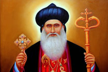

St. Baselios Yeldho (Kothamangalam Bava)

St Baselios Yeldho was born in a village called kooded (now known as Karakosh) near Mosul in Iraq where Marth Smooni and her 7 children suffered martyrdom. At a very young age he joined the Mar Bahanan Monastery and become a monk. In 1678 he was consecrated Maphriyana by the Patriarch of Antioch Moran Mar Ignatius Abdul Masiha I. In 1685 at the age of 92, the holy father started the difficult mission to India at the request of Mar Thoma II of Malankara who informed the Patriarchate about the unpleasant situation of the Church here.
The saintly Maphriyana was accompanied by Mar Ivanios Hidayathulla, his brother and two monks but only three of them is believed to have reached Malankara. As the saint reached the church premises, the church bells began to toll. People living in the neighbourhood rushed to the church to find out what the commotion was about. And that was on 'Kanni 11th' in the Malayalam calendar (end of September), AD 1685. The Saint entered the church and sat on the steps of the 'Madbaha'. There was a young deacon who was fluent in Syriac. When he realized that a Episcopa had stayed behind at Kozhipally, he and some members of the congregation set out for the place. They took a kerchief from the Saint for identification. When the Episcopa saw the approaching crowd he was afraid. He thought that they had killed Bava and were now about to get at him. He therefore refused to come down from the tree. The deacon however offered him the sign of peace and spoke Syriac. He then came down from the tree and went with the people to the church.
On Kanni 13, the church used to celebrate its foundation day. On the 12th evening the Vicar sought the Saint's permission to hoist the flag. The Saint replied that the festival of the Holy Cross should be celebrated on the 14th and not on the 13th. When it was explained to the Saint that what they were celebrating was not the festival of the Holy Cross but the anniversary of the founding of the parish, the Saint permitted them to go ahead but reminded them about the importance of the festival of the Holy Cross.
On the next day, on the feast of the Holy Cross, ('Kanni 14' as per the Malayalam calendar), Episcopa Mar Ivanios Hidayathulla was consecrated as Metropolitan after the Qurbana by the saintly Mar Baselios Yeldho Bava. (Mar Ivanios, who was consecrated by Mar Yeldho, carried on apostolic work for eight years. He passed away in 1693 and was buried at the Mar Thoman Church, Mulanthuruthy). Because of the tedious journey and the old age, Bava was totally exhausted by then. Three days after he became seriously ill. On Kanni 17th, he received the last sacraments of anointment with oil and extreme unction. All the while he was lying inside the church. Two days after (on Kanni 19, which is September 29) in the afternoon, the saintly father left his mortal self for his heavenly home at the age of 92. That was a Saturday. As he was sinking, the congregation assembled inside the church and were offering prayers. The Saint told them that he was about to die and when his spirit leaves his body, there would be a sign on the Cross situated on the western side of the Church. And the huge granite Cross miraculously lit up at the time of the Saint's demise. The Holy Father's mortal remains was entombed on the next day (Kanni 20) in the western side of the Madbaha of the church. The two weeks of sojourn of the Maphriyana at Kothamangalam electrified the Marthoma Christians all over Malankara and the mission undertaken by the saint was fulfilled to a large extent by his faithful associate, Metropolitan Mar Ivanios Hidayathulla.
In 1947 Mar Baselios Yeldho of blessed memory was declared a saint by the then Catholicos of the church, His Holiness Baselius Geevarghese II.